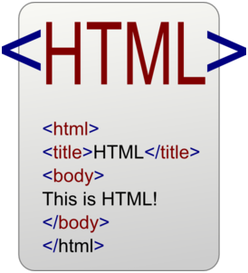

앞으로 몇 차시 동안 HTML에 대해 알아보려고 합니다. 이제 인터넷은 뗄래야 뗄 수 없을 정도로, 우리 생활 깊숙히 자리 잡고 있습니다. 인터넷을 이용하는 분이라면, HTML이 정확히 무엇인지는 몰라도 한 번쯤은 들어보셨을 것입니다.

▶ HTML 이 무엇인가요? HTML은 Hyper Text Markup Language의 약자입니다. 하이퍼텍스트(Hyper Text)는 링크로 연결된 텍스트 페이지를 말합니다. 예를 들어 지금 이 시간에 보고 있는 블로그 페이지도 하이퍼텍스트입니다. 현재의 포스팅을 끝까지 다 읽어야 다음 포스팅으로 갈 수 있는 것이 아니고, 언제든지 링크를 통해 다른 포스팅이나 내 블로그, 블로그홈 등으로 갈 수 있습니다. 순서대로 읽어가야 하는 기존의 문서와는 다르게, 링크를 통해 자유롭게 이동이 가능하다는 것이 하이퍼텍스트의 가장 큰 특징입니다. 마크업 언어(Markup Language)는 태그를 써서 문서의 구조를 정하거나 문서 내에 링크를 삽입할 때 사용되는 언어입니다. 여기서 문서의 구조란 제목, 단락, 본문 등을 말합니다. 즉, HTML은 웹에서 링크를 통해 이동 가능한 문서를 만드는 데 쓰이는 언어 정도로 알아두면 좋을 것 같습니다.

▶ HTML은 프로그래밍 언어가 아닌가요? 위에서 말했듯이, HTML은 마크업 언어입니다. 일반적으로 마크업 언어는 프로그래밍 언어가 아니라고 봅니다. 마크업 언어는 프로그래밍 언어의 가장 큰 특징이라고 할 수 있는 계산, 조건문이나 반복문을 사용할 수가 없기 때문입니다. HTML만으로는 웹 브라우저에서 텍스트를 보여주고 링크를 통해 다른 텍스트 페이지로 이동하는 것 이상의 일은 할 수 없습니다. 웹페이지에서 프로그래밍을 하려면 HTML뿐만 아니라 프로그래밍 언어인 JavaScript를 섞어서 써야 합니다.
▶ 웹 프로그래밍을 하려면 무엇이 필요한가요? 웹 프로그래밍은 인터넷을 통해 접근할 수 있는 웹사이트를 만드는 것입니다. 나만의 홈페이지를 만드는 것부터, 네이버와 같은 거대한 포털 사이트를 만드는 것까지 모두 웹 프로그래밍이라고 볼 수 있습니다. 웹 프로그래밍의 가장 기본은 HTML로 사이트를 구성하는 웹페이지를 만드는 것입니다. 그런데 HTML로는 단순한 텍스트와 링크의 나열만 할 수 있기 때문에, 보기에 좋지 않습니다. 예쁜 서체나, 컬러 등을 사용할 때 필요한 것이 CSS(Cascading Style Sheet)입니다. CSS는 웹페이지의 스타일을 만들어 디자인적인 요소를 추가할 수 있습니다. 보여주기만 하는 웹페이지는 HTML과 CSS만으로도 충분합니다. 그러나 최근 대부분의 웹페이지에서는 보기만 하는 것이 아니라 사용자의 요청이나 액션에 따라 여러 가지 일을 처리해야 합니다. 예를 들어 웹사이트 회원가입을 할 때를 생각해 보지요. 회원정보를 입력하고 회원가입을 버튼을 눌렀을 때, 제대로 정보를 입력했다면 "회원가입이 완료되었다."는 메시지가 떠야 하고, 빠진 정보가 있다면 "빠진 정보를 입력하라."는 메시지가 떠야 합니다. 이와 같이 사용자의 액션에 따라 다른 결과가 나타나게 하려면 JavaScript가 필요합니다. 그 외에도 JavaScript는 버튼 클릭, 텍스트 박스 입력, 알림창 띄우기 등을 할 때 사용됩니다.
정리하면 HTML로 웹페이지의 뼈대를 만들고, CSS로는 웹페이지에 옷을 입히며, JavaScript로는 기능을 추가한다고 볼 수 있습니다. 그럼 다음에는 HTML 태그를 사용하는 방법을 배우고, 간단한 웹페이지를 만들어 보겠습니다. [출처] [HTML 기초 강의] ① HTML이란?|작성자 코딩타임